地政学
ブハラはイラン世界、テュルク世界、ロシア帝国、ソ連、独立後のウズベキスタンが重なる州都です。トルクメニスタンに近い砂漠縁で、国境、資源、水、観光外交が街の価値を作ります。周辺国との回路も重要です。
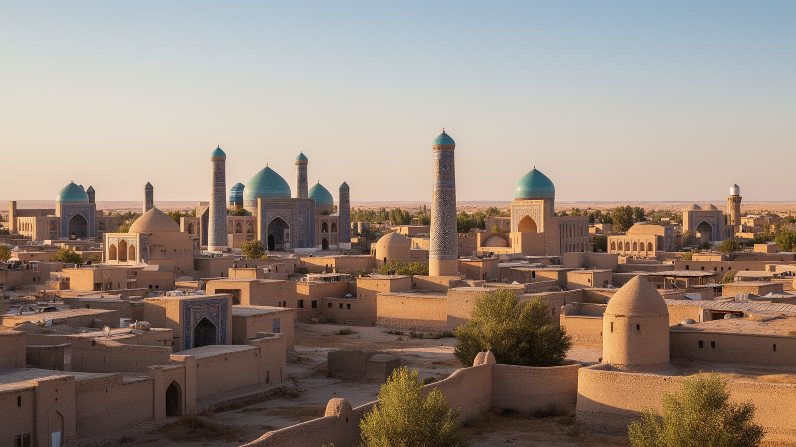
🇺🇿 ウズベキスタン / 中央アジア / World City Atlas
砂漠縁のオアシスに、イスラム学芸、ユダヤ人街、隊商路、工芸、綿花と天然ガス、観光復興が重なる古都。保存された旧市街だけでなく、水、労働、信仰、暮らしを読む都市です。
都市の骨格
ブハラは小さな旧市街だけで完結する都市ではありません。水路、バザール、モスク、マドラサ、ユダヤ人街、ソ連期の住宅、郊外農地、天然ガス地帯が重なり、観光の美しさと生活の制約が近くにあります。
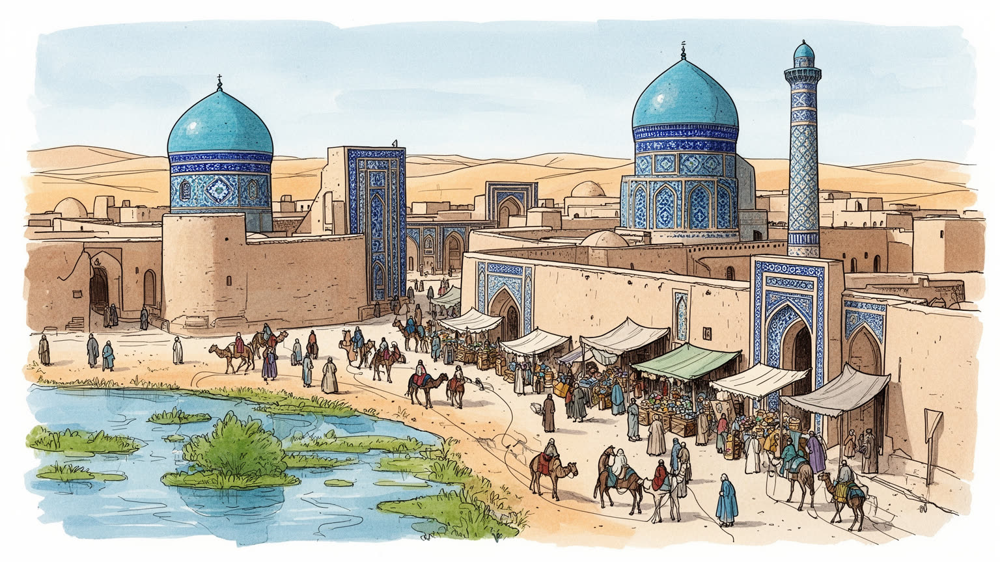
ブハラはイラン世界、テュルク世界、ロシア帝国、ソ連、独立後のウズベキスタンが重なる州都です。トルクメニスタンに近い砂漠縁で、国境、資源、水、観光外交が街の価値を作ります。周辺国との回路も重要です。
観光だけでなく、綿花、カラクル羊、食品加工、工芸、建設、天然ガス関連、教育、公務、交通が都市を支えます。ホテルや修復の仕事と、郊外農業や市場労働が近い距離で動きます。若者の就業先も大きな課題です。
モスク、マドラサ、霊廟、スーフィー信仰、ペルシア語系文化、ユダヤ人街の記憶が重なります。祈りと学問の都市であり、宗教建築は観光資源である前に地域の礼節を支える場です。墓参も今なお続きます。慎みも要ります。
住民の生活は旧市街の中庭、ソ連期の集合住宅、学校、市場、郊外の農地に広がります。観光は収入を生みますが、家賃、保存規制、水不足、交通、若い働き手の進路も問います。日常との調整が核心です。今も続く課題です。
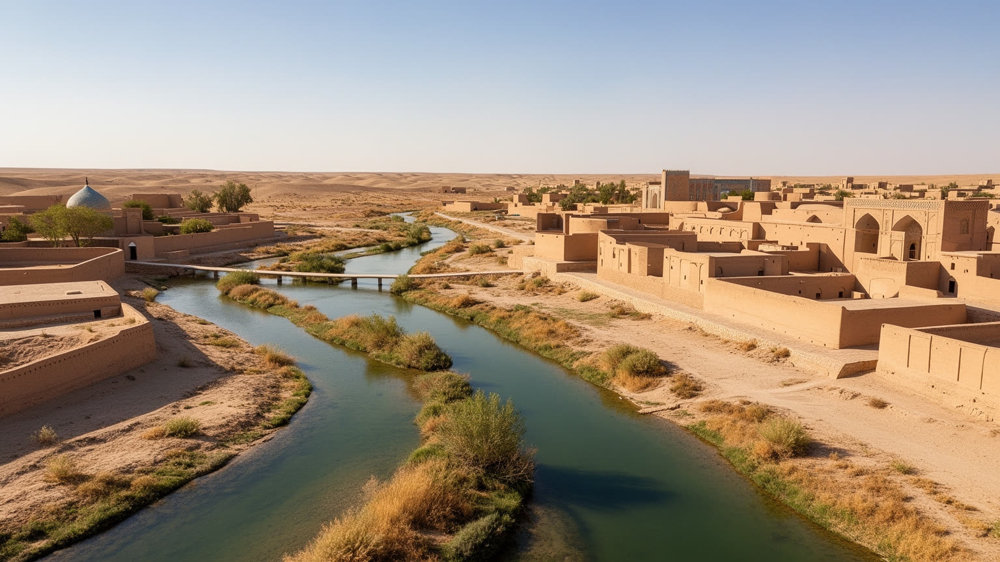
ブハラの美しさは、乾いた光の中に現れる青いタイルや日干しの壁だけではありません。都市を成り立たせてきた本当の基盤は、水を集め、貯め、分け、日陰を作る技術です。かつてのハウズ、水路、中庭、隊商路の給水施設は、旅人と住民を支える生活装置でした。現在も水は、住宅、ホテル、緑地、農地、工芸、清掃、夏の暑さへの対応に直結します。観光客には乾燥した古都の景観が魅力に見えますが、住民にとって少雨と酷暑は、飲料水、下水、樹木、食品価格、健康の問題です。郊外の綿花や果樹の栽培、州全体の農業、ホテルの水使用は同じ水資源に依存します。水の配分を見れば、ブハラが単なる遺産都市ではなく、乾燥地で日々管理される都市だと分かります。中庭の木陰や細い路地の涼しさは、景観の味わいであると同時に気候適応の知恵です。水を守ることは、観光の快適さを守るだけでなく、住民の生活と旧市街の素材を守ることでもあります。水辺の記憶は失われた池や埋められた水路にも残り、地名、庭の配置、木の種類に表れます。夏の午後に歩きやすい道、家庭で使える清潔な水、農地へ届く灌漑水は互いに競合し、行政と住民の判断を毎日必要とします。気候変動で暑さと水需要が増すほど、古い水の知恵を現代の節水、漏水対策、公共空間の設計へつなぐ必要があります。日陰も大切です。
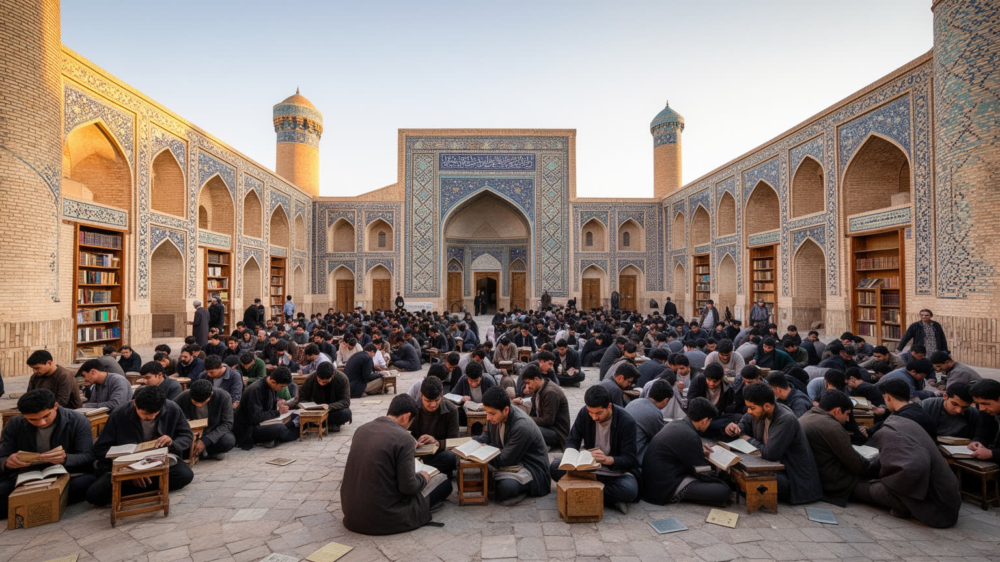
ブハラは「聖なるブハラ」と呼ばれてきた都市で、イスラム学芸と宗教的権威の記憶が街路に厚く残っています。カラーン・ミナレット、ミル・アラブ・マドラサ、ウルグ・ベク・マドラサ、イスマーイール・サーマーニー廟は、王朝の威信、教育、墓参、祈りを結ぶ場所です。ここで重要なのは、建築の壮麗さだけを鑑賞することではありません。マドラサは知を制度化する場であり、モスクは共同体の時間を整える場であり、霊廟は家族や地域が死者と向き合う場です。観光化が進むほど、写真を撮る空間と祈る空間の距離が縮まり、礼節、静けさ、服装、案内の言葉が重要になります。ブハラの宗教的景観には、スーフィーの系譜やナクシュバンディー教団の記憶も重なり、学問と信仰を単純に分けられません。イスラム都市としての価値は過去の栄光だけでなく、現在も人びとがどのように敬意を払い、学び、墓参し、場所を使うかに表れます。宗教施設の周囲では、案内人、清掃、警備、花や菓子を売る小商いも生まれます。観光客の動線が広がるほど、地元の参拝者が静かに過ごせる時間と場所を守る工夫が必要になります。学問都市の記憶は、今日の学校や大学、宗教教育へのまなざしにも影響します。若い世代が歴史を誇りとして学びながら、現代の科学や職業教育へ進む接続も重要です。知の都市としての誇りは、教育の質にも映ります。
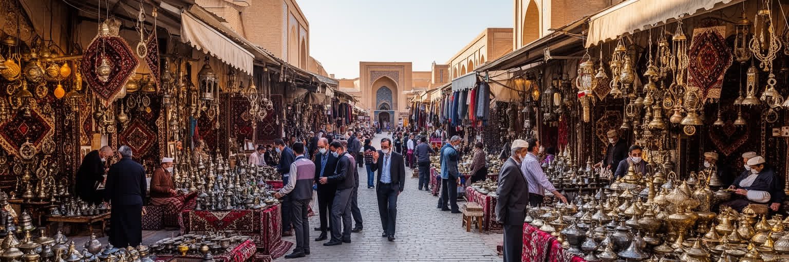
ブハラの旧市街を歩くと、広場よりも屋根付きの通路、交差点、小さな店、職人の作業場が都市の記憶を語ります。隊商路の都市とは、遠くから来た商品を売る場所であるだけでなく、宿、倉庫、両替、税、情報、宗教施設、食事、修理が一体になった仕組みです。布、香辛料、金属器、宝飾、紙、染料、羊毛、陶器が行き交う中で、商人、職人、学者、巡礼者、通訳、運び手が街を使いました。現在のバザールや土産物店は観光客向けに整えられていますが、値段交渉、仕入れ、家族経営、現金と電子決済、郊外から届く食品の流れは今も生活経済です。観光客が買う刺繍や皿の背後には、素材の調達、作業時間、家賃、販路の問題があります。バザールを見ることは、ブハラが静かな博物館ではなく、交易の技術を現代の小商いへ変えながら生きている都市だと確認することです。路地の密度は、物と人が滞在し、交渉し、また移動するための都市の形です。朝の食品市場、夕方の土産物街、国内旅行者の買い物では、同じ場所でも値段と会話の調子が変わります。観光の演出と住民の実用が重なるため、市場は都市の変化を最も早く映す場所になります。物流が乱れれば、土産物だけでなくパン、肉、野菜の価格も揺れます。市場は歴史的な風景である前に、家計と雇用を支える現場です。路地の陰影も商いを助けます。
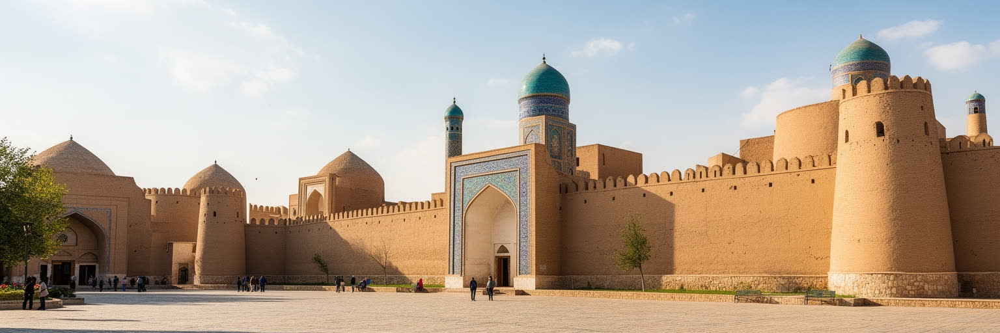
アルク城はブハラを観光の名所として見せるだけでなく、支配、軍事、司法、徴税、外交が都市の中心に置かれていたことを示します。エミールの権力は宮殿の内部だけで完結せず、城壁の外の市場、宗教指導者、隊商、農村、軍、外国勢力との関係で維持されました。ロシア帝国の圧力、ブハラ・ハン国から首長国への政治、ソ連による体制転換は、都市の記憶に複雑な層を残しています。アルクを歩くと、華やかな宮廷文化だけでなく、牢獄、処罰、反乱、外交交渉、近代化の失敗も視野に入ります。古都を穏やかな観光地としてだけ語ると、権力が都市空間をどう使い、誰を守り、誰を排除したのかが見えません。現在の州都としてのブハラにも、行政庁舎、警備、保存区域、観光計画、道路整備という政治の表れがあります。アルクは過去の城塞であると同時に、都市が権威を見せる場所をどこに置くかを考えさせる装置です。支配の記憶を読むことは、保存された壁の背後にある社会の緊張を読むことでもあります。観光施設として整えられた城壁の外では、交通整理、物売り、学校帰りの子ども、役所へ向かう人が行き交います。権力の中心でした場所が、現在は公共空間としてどう使われているかを見ると、都市の政治史が日常の動きへ接続します。城塞を背景にした記念写真の明るさと、過去の暴力や統治の重さを同時に受け止めることが、ブハラを浅く消費しないための態度です。
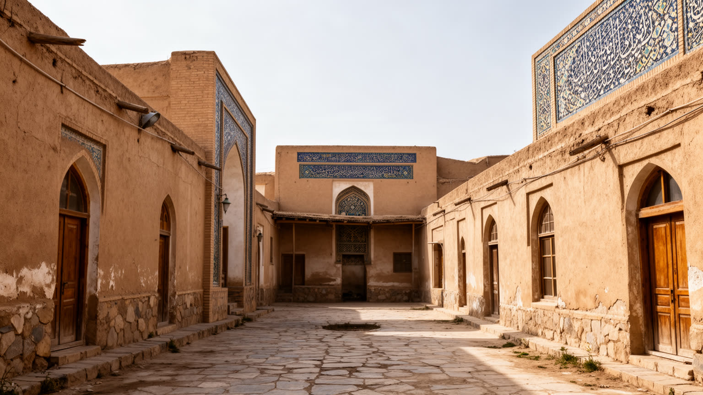
ブハラの都市文化を語るとき、イスラム建築だけを見ていると重要な層を落としてしまいます。ブハラ・ユダヤ人の共同体は、ペルシア語系の言語、商業、音楽、食、家庭生活を通じて都市に深く関わってきました。ソ連期、独立後、イスラエルや米国などへの移住によって共同体の規模は小さくなりましたが、シナゴーグ、家屋、墓地、記憶の語りは、ブハラが単一の宗教や民族で説明できない都市であることを示します。旧市街の路地には、ウズベク語、タジク語、ロシア語、観光客向けの英語が重なり、家庭の言葉と公的な言葉がずれることもあります。多言語性は華やかな国際性ではなく、商売、学校、役所、宗教儀礼、家族史の中で調整される現実です。移住で人が減った場所を観光資源として語るときには、共同体の喪失や記憶の扱い方にも注意が必要です。ブハラの多文化性は、異なる人びとが完全に調和していたという単純な物語ではなく、共存、制約、移動、沈黙が重なる都市史です。家族の移住先との送金や訪問、保存された家屋の使われ方、宗教施設の維持は、街に残る人だけでは完結しません。離れて暮らす共同体の記憶も、現在のブハラの文化地図を作っています。観光案内では見えにくい名前、墓碑、台所、音楽の記憶を丁寧に扱うことが、多文化都市としての信頼を支えます。失われた声にも耳を澄ませたい都市です。
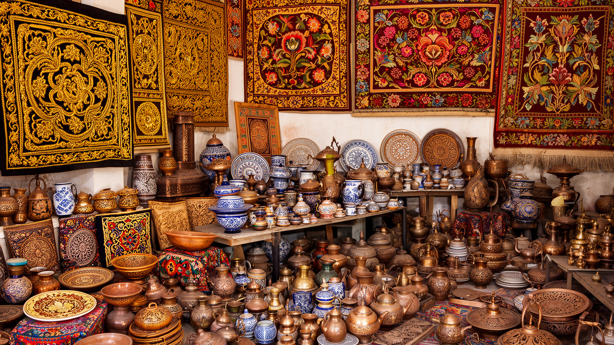
ブハラの工芸は、観光客が短時間で買う土産物だけではありません。金糸刺繍、絹、スザニ、陶器、銅細工、木彫、絨毯、伝統的な帽子や衣服は、家庭、徒弟、学校、商店、観光市場をつなぐ技能の体系です。模様は美しい装飾であると同時に、植物、星、信仰、婚礼、地域の記憶を含みます。観光客が増えると、職人には収入の機会が広がりますが、同時に早く安く作る圧力も強くなります。実演として見せる手仕事だけが残り、素材を選び、染め、縫い、焼き、磨き、修理する時間が軽く扱われると、技能の厚みは失われます。若い世代が工芸を仕事にするには、作業場の家賃、販売価格、輸出やオンライン販売、教育、家族の理解が現実的でなければなりません。ブハラの工芸を読むことは、古い模様を称賛することではなく、その模様を作る人が都市に住み続けられるかを見ることです。手仕事は都市の記憶を触れる形で残す方法であり、観光経済の質を測る尺度でもあります。安い模倣品が増えれば本物の技能は見えにくくなり、価格だけで選ばれる市場では時間をかけた仕事が続きません。工芸を支えるには、作る過程を尊重し、修理や注文制作まで含めて価値を伝える仕組みが必要です。職人の作業場が旧市街から追い出されれば、景観は残っても文化の生産現場は失われます。道具を直す店も大事な場です。
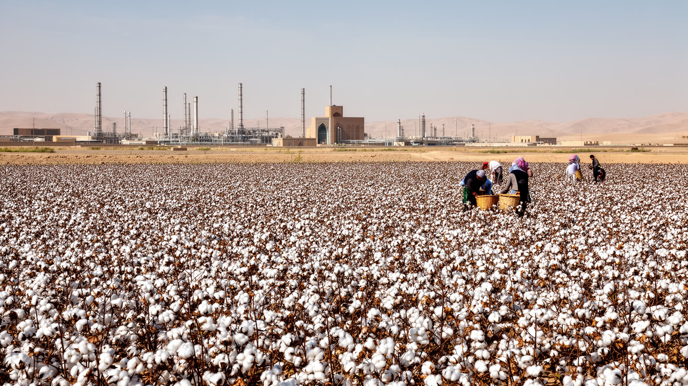
ブハラの都市経済を旧市街の観光だけで見ると、州全体を支える別の力を見落とします。ブハラ州には綿花、穀物、果樹、畜産、カラクル羊、食品加工に加え、天然ガスや関連インフラがあります。市内のホテル、飲食、工芸、交通は目に入りやすい産業ですが、周辺の農地、資源開発、倉庫、建設、公務、教育も住民の雇用を作ります。天然ガスは地域に投資と雇用をもたらす一方、環境負荷、資源依存、価格変動、利益の配分という問題を伴います。綿花は長く水と労働を大量に使う作物であり、灌漑、労働条件、土地利用の変化を抜きに語れません。観光都市としてのブハラは華やかに見えますが、実際の生活は州経済の広い分業に支えられています。若者が観光サービスで働くのか、大学へ進むのか、資源や農業の現場へ向かうのかは、家族の収入と都市の将来を左右します。GDPを州の代理値で読む必要があること自体、ブハラ市と周辺地域の経済が切り離しにくいことを示しています。資源収入が道路、教育、医療、上下水道へ戻るかどうかは、古都の生活基盤にも直結します。観光と資源の二つの収入源を持つからこそ、短期の開発に偏らず、技能と生活環境へ投資する視点が重要になります。州都の行政機能は、この広い経済を調整する役割を持ちます。数字に表れる成長が、住民の賃金や公共サービスへ届くかが問われます。
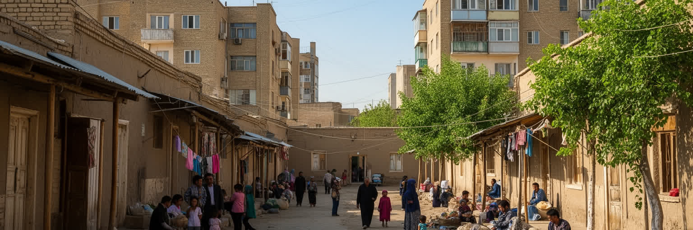
ブハラの暮らしは、観光客が歩く旧市街の景観と、住民が毎日使う住宅地や新市街の生活が重なってできています。中庭住宅は日陰、家族、来客、調理、祈り、手仕事を受け止める空間で、乾燥地の気候に合った生活の知恵を持ちます。一方で、ソ連期以降の集合住宅、学校、病院、役所、バス停、商店は、現代の公共サービスと通勤通学を支えています。保存区域では外観や改修に制約があり、観光客の増加で宿泊施設や飲食店が増えると、家賃や生活道路の使い方も変わります。古い家を守ることは重要ですが、住民が暑さ、排水、暖房、通信、介護、子どもの教育に困るようでは、保存は生活を圧迫します。ブハラを生きた都市として見るには、記念碑の美しさだけでなく、朝の買い物、学校への送り迎え、結婚式、葬儀、近所づきあい、若者の仕事探しを見る必要があります。観光の舞台として整った旧市街と、生活の手触りが残る路地のバランスが、都市の将来を決めます。家庭の中庭では世代が近く暮らし、夏の夜には屋外の涼しさが生活のリズムを作ります。新しい住宅や商業施設が増えても、近所の助け合い、親族訪問、冠婚葬祭の場所が失われれば、都市の安心感は弱まります。観光客に見える静かな路地の背後には、修理費、光熱費、介護、通学、結婚費用などの現実があります。暮らしの速度も読む必要があります。
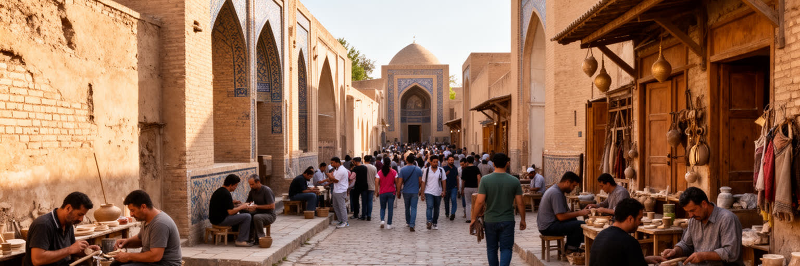
ブハラの旧市街は世界遺産として評価される一方、保存と観光の調整が難しい都市でもあります。壁を直し、タイルを補い、広場を整え、宿泊施設を増やすことは、建物を守り収入を生む手段になります。しかし、どの時代の姿を基準にするのか、古い素材をどこまで残すのか、住民の改修や商売をどこまで認めるのかという判断は簡単ではありません。観光客が見やすい景観を作るほど、生活の雑多さや小さな修理、洗濯物、子どもの遊び、露店の声が外へ押し出されることがあります。保存は専門家と行政だけの仕事ではなく、そこに住む人が日常の中で建物を使い続けることで成り立ちます。短期の見栄えを優先すると、歴史は舞台装置になり、修復の技術も浅くなります。逆に、生活の必要ですけを優先すれば、取り返しのつかない破壊も起こります。ブハラの保存を読むことは、美しい旧市街を称賛するだけでなく、誰が費用を払い、誰が利益を得て、誰が移動を迫られるのかを見ることです。暮らしを残せる保存こそ、都市の価値を長く支えます。修復現場では、左官、木工、タイル、考古学、行政手続き、観光事業が重なります。時間のかかる調査や住民との合意を軽く扱うと、整った景観はできても都市の信頼は失われます。保存区域の外側にある駐車場、広告、電線、排水も景観を左右します。細部まで整えるには、観光の収益を生活インフラへ戻す発想が要ります。
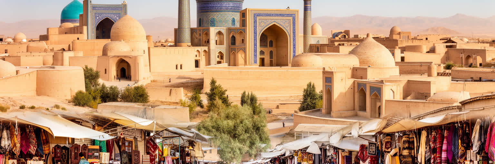
ブハラを読むとき、保存された旧市街の美しさだけに目を奪われると、都市の本当の厚みを取り逃がします。この街は、砂漠縁の水管理、隊商路の商業、イスラム学芸、スーフィー信仰、ユダヤ人共同体、ロシア帝国とソ連の変化、独立後の観光政策、州経済の資源と農業が重なった場所です。青いタイル、ミナレット、中庭、バザールは魅力的ですが、それらを支えるのは職人、案内人、清掃、修復、学校、市場、農地、交通、行政、家庭の生活です。観光都市として成功するほど、都市は分かりやすい過去として整えられます。しかし、分かりやすさの外側にある水不足、家賃、移住、若者の仕事、保存規制、資源依存を見なければ、ブハラは静かな舞台になってしまいます。重要なのは、古都の価値と現在の住民の暮らしを対立させないことです。鉄道、空港、道路はタシュケント、サマルカンド、ヒヴァ、国境近くの町を結び、観光客だけでなく学生、商人、農産物、親族訪問を運びます。ブハラの世界性は、過去に多くの人が通った事実だけでなく、今も異なる記憶と生活条件を調整し続ける力にあります。路地の美しさの奥に、都市を維持する人の時間を読むことが、この街を見る入口になります。短い滞在では静かな古都に見えても、住民には物価、仕事、教育、医療、宗教、親族関係が続く生活圏です。その持続性まで読んで初めて、ブハラは現在の都市として立ち上がります。